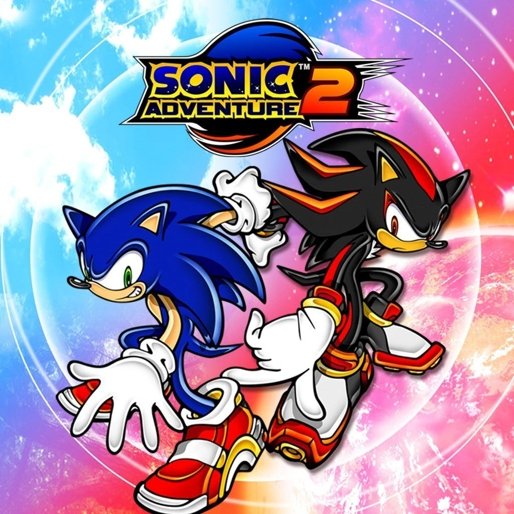

Shadow el Erizo
Shadow the Hedgehog es un personaje de la franquicia de Sonic the Hedgehog, creado por Sega. Apareció por primera vez en Sonic Adventure 2 (2001) para la Dreamcast.
Shadow fue creado por el Dr. Gerald Robotnik como el "último ser viviente" y es un rival de Sonic, aunque su papel varía entre ser antagonista, antihéroe y aliado en diferentes juegos.
Shadow es conocido por su velocidad similar a la de Sonic, su uso de los Chaos Emeralds para realizar Chaos Control (teletransportación y manipulación del tiempo), y su personalidad seria y misteriosa.
Su historia está marcada por la tragedia de su amiga María Robotnik y su lucha por encontrar su propósito en la vida.
Juegos en los que aparece
Shadow hace aparición en algunos juegos de la franquicia
En estos grandes juegos tenemos:
Sonic Adventure 2 (2001) – Su primera aparición como rival de Sonic.
Sonic Heroes (2003) – Parte del equipo Dark junto a Rouge y Omega.
Shadow the Hedgehog (2005) – Su propio juego, donde explora su pasado y su destino.
Sonic 06 (2006) – Papel importante en la historia junto a Sonic y Silver.
Sonic Generations (2011) – Aparece como jefe rival.
Sonic Forces (2017) – Jugable en misiones especiales.
Música
Este gran erizo también tiene sus propias pistas.
Se distingue al escuchar una guitarra que es épica
Aquí una muestra de un tema que hace reconocimiento fácil de Shadow
Shadow y Maria
Shadow fue creado en la estación espacial ARK por el Dr. Gerald Robotnik con el propósito de desarrollar la forma de vida definitiva.
Durante su tiempo en la ARK, Shadow conoció a María Robotnik, la nieta del Dr. Gerald. María era una niña amable que sufría de una enfermedad terminal, y veía en Shadow la esperanza de ayudar a la humanidad.
Sin embargo, el gobierno descubrió la investigación del Dr. Gerald y temió que Shadow fuera una amenaza.
La G.U.N. (Guardian Units of Nations) atacó la ARK y asesinó a casi todos a bordo. Antes de morir, María ayudó a Shadow a escapar, pidiéndole que protegiera la humanidad.
Esta tragedia marcó profundamente a Shadow, llevándolo a buscar venganza en Sonic Adventure 2, hasta que recordó las verdaderas palabras de María y decidió salvar la Tierra.

Shadow en Sonic Adventure 2 juega un papel clave como rival de Sonic y un personaje con un profundo trasfondo emocional.
Inicialmente, Shadow es despertado por el Dr. Eggman y lo ayuda en su plan de conquista mundial. Utiliza los Chaos Emeralds para activar Chaos Control y escapa de la G.U.N., culpando a la humanidad por la tragedia en ARK. Sin embargo, a lo largo de la historia, comienza a recordar su verdadero propósito: la promesa que le hizo a María Robotnik de proteger a la humanidad.
En el clímax del juego, Shadow se une a Sonic y los demás para detener la caída de la estación espacial ARK, que amenazaba con destruir la Tierra. En un acto heroico, Shadow usa todo su poder para salvar el mundo, aparentemente sacrificándose en el proceso.
Y afortunadamente más tarde se revela que sobrevivió y continuó apareciendo en la saga de Sonic.
